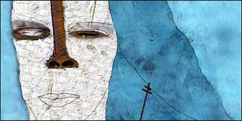

|

Et lite stykke tid.
... begynner bitene å falle på plass. Det å våkne opp og se ned på mitt eget bleke ansikt var skremmende rent intellektuelt, men følelsesmessig var opplevelsen preget av ro og harmoni. Hyllemeterne mine med nær-dødenbøker har hjulpet meg betydelig. Ve den som dør uforberedt. Positivt er det å ha blitt kvitt strekkmerkene på magen, det er morsomt å ha 360 graders syn, men jeg er ikke udelt positiv til at hele kroppen er vekk Kanskje er det fra dette helvetestroen munner ut.
Min nye tilstand reiser nye spørsmål. Er dette varig? Vil jeg seile rundt her for alltid, noe jeg ikke nærer noe ønske om, eller vil jeg omsider forsvinne og dø som kroppen min? Hvorfor treffer jeg ikke noen andre? Jeg er forhåpentligvis ikke den eneste her. Det hadde vært hyggelig å møte mamma. Forventningene mine til sosialt samkvem i denne nye tilværelsen er kanskje naiv. Det er litt ensomt, dette her. Natten er verst. Det hadde vært godt å sove, savner det. Kjedelig å sveve gjennom rommene uten å kunne sette over en kopp kaffe. Ikke kunne åpne en bok. Ikke bla i en avis. Jeg råder deg til å lese mye, høre mye på musikk. Ta med deg alt du kan. Du kommer til å huske alt. Frokosten med Aslak og deg er et absolutt høydepunkt. Jeg nyter å henge rundt og lytte til hans underlige tilnærminger til tilværelsen. Jeg fant Tigerbamse i natt. Den ligger bak døren på vaskerommet. Jeg ser hårene stritte på armene dine. Skulle ønske jeg kunne stryke dem ned, berolige deg. Nå må du vekke Aslak, ellers rekker du ikke å få ham på skolen i tide. Håper du skal skrive i morgen tidlig også. -Var bamsen der? -Det er en tiger. Den var der, ja. Under mattene som lå til vask. -Du skriver ned dialogen vår? -Fordi jeg tar bort ting. Etter at jeg går herfra kan alt vi har pratet om være helt borte. -Hvorfor tar du det bort, tror du. -Det gjør vondt. -Hva er denne stemmen du opplever? -Det er Berit. -Du mener at det er dine minner av Berit som spilles opp for deg? -Det er ikke minner. Det er Berit. -Du vet at hun er død, men sier likevel at det er Berit. -Jeg tror at det er henne. Hun er i en annen form, men det er henne. -Savner du henne like mye? -Til være psykolog stiller du dumme spørsmål. Jeg savner henne hver eneste time, hvert eneste minutt på døgnet. Hva ville du ha gjort? -Du har sagt at det å høre Aslak er som å høre henne. -Han har hennes øyne og munn, og han har hennes ord og formuleringer. -Det er altså godt å ha noe av henne igjen. -Det er mer. Stemmen hennes har blitt sterkere denne siste uken. Jeg tror at hun er tilstede på et eller annet vis. -Hva tenker du om dette? -Jeg er glad for at du har taushetsplikt. -Du føler selv at det er usannsynlig at hun er tilstede som du sier? -Selvfølgelig. Jeg tror det vel egentlig ikke. Jeg tror ikke på det selv, jeg må bare si det høyt. Si det slik at det blir borte. -Du pratet om det sist uke, men det ble ikke borte? -Det var en av dagene jeg tok bort. Bare visket ut alt vi pratet om. -Du hører bare stemmen hennes når du sitter foran PC’en? -Der hun satt da hun døde. -Du bare setter deg der, og så hører du henne? -Jeg hører henne kun om morgenen. -Klarer du fortsatt å skrive litt hver morgen? -Opp klokken seks. -Spiser du frokost først? -Ikke frokost. Bare setter over vannkokeren og tar med en kopp pulverkaffe til PCen. -Opplever du at det er en stemme som prater inn i øret ditt, eller hvordan arter det seg. -Jeg pratet med en radioamatør en gang. Han fortalte at etter lange netter med hodetelefoner og endeløse samtaler, kunne han ta av seg øretelefonene på morgenkvisten og fortsette å høre radiosignaler uten noen form for tekniske hjelpemidler. At han opparbeidet en sensibilitet for disse signalene som gjorde at han gjenkjente dem uten radio. Jeg forestilte meg at det ble igjen en slags summing i hodet hans. At hjernen fortsatte å spinne og lytte til lydene som hadde sust igjennom hodet, som etter at man har sittet i mye lyd og lyden forsvinner, som etter Stones-konserten på Valle Hovin, da jeg stod med fingrene presset inn i ørene hele konserten og hele kroppen virket som ører, og det var bråk inne i hodet hele dagen etter. At det bare er rester av gammel lyd. -Er det slik? Er det rester av samtaler du har hatt med Berit? -Nei, men det er et slags sus. Stemmen hennes er et slags sus inne i hodet. Og det er Berit. Fra et sted midt inne i hodet mitt. Kanskje litt bak i hodet. -Tar du medisinene dine? -Ja. -Du ser bort. Lyver du? -Ja. -Du motsetter deg medisineringen? -Ja. -Overfor meg trenger du ikke være demonstrativ. Jeg forstår skepsisen til pillene, men det er nok fornuftig i din situasjon. -Du tror jeg er sprø? -Deprimert, ikke sprø. Du har vært, og er under stort press. Det er mange som bukker under etter å ha mistet kona uten forvarsel. -Jeg tror jeg har fått henne igjen. -Jeg tror du bør spise pillene dine. Da må vi runde av for i dag. Du skal skrive under på et papir her, så slipper du å betale egenandelen heretter. Jeg tror du skal komme igjen i morgen til samme tid. Huffda. Jeg ser du rykker til så fort jeg prater. Eller hva jeg nå gjør. Prat til meg, eller tenk til meg. Ikke bare skriv.
-Elsker deg, Berit.Jeg forsøkte å bli med deg til psykologen i går, men jeg mistet deg gradvis da du gikk ut av huset. Alt ble utflytende og gjennomsiktig, som om både du og resten av verden løste seg opp og ble til ingenting. Et øyeblikk trodde jeg at det var slutt, at jeg skulle videre. Jeg vet ikke hvorfor jeg tror at jeg skal videre. Kanskje skal jeg være her for alltid. Hva vil skje når du dør? Kan vi få være sammen igjen da? Hvordan vil det være? Uten kropper? Gråter du? Det er fortsatt ingen her, men jeg så noe i mørket i natt. Et varmt rødskjær et sted langt borte. Er det noe med datamaskinen som gjør at du oppfatter meg? At den forsterker meg? Eller kanskje det er fordi det var der det sluttet. Jeg prøver å prate med deg andre steder i huset, men det fungerer ikke. Det må være noe med tiden på døgnet også. TVNorge har jo alltid vært bare snø bortsett fra sent på natten. Kanskje det er for mye støy i luften til at det fungerer på dagen. Søtt at Aksel ligger i sengen min. Gud som jeg savner å holde i ham. Deg. Dere. Jeg ser at psykologen reagerer på at du hører meg. Kanskje ikke så lurt å prate med ham om det. Du må snart gå. Prat til meg før du går, Egil. Prat til meg. Du er nydelig. Nå må du vekke Aksel. Ikke glem tiden, Egil. Kom i morgen, også.
-Du ser vel det urimelige i dette. -Hun sa at hun så et rødskjær i natt. Jeg lurer på hva det er. Om det er som på filmene, et lys som blir sterkere, som man går inn i. Om hun forsvinner nå. -Ja, hva føler du om det? At hun kanskje blir borte? -Som om hun skal dø en gang til, men at jeg vet det denne gangen uten å kunne gjøre noe med det. Det er enda verre. Jeg vil ha henne hos meg. Selv om det bare er litt av henne, selv om jeg ikke tror på verken gud eller spøkelser eller gjenoppstandelse. Jeg vil ha det jeg kan få. Hva tror du lyset er? Det røde lyset hun så i natt? -Lyset pleier å være sterkt og hvitt i fortellinger om nær døden opplevelser. Det er ikke godt å si hva hun... hva dette lyset du forteller om er. -Du har stor motstand mot min kones nye tilstand, psykolog, men det driter jeg i. Hun er så virkelig som hun bare kan få blitt. -Det ville være en sensasjon. Tenk deg Se & Hør-oppslaget; "Egil Thommesen prater daglig med sin avdøde kone. Se bildene. Kun i Se & Hør" -Jeg vil ikke selge meg til Se & Hør. Hun er min. Jeg vil ha henne for meg selv. -Det skjønner jeg. Hvis du forsøker litt visualisering, ser for deg forsiden på Se & Hør med ditt bilde på. Kanskje sittende foran PC’en med fingrene på tastaturet og lukkede øyne. -Er det din jobb å gjøre meg mer ulykkelig? Skal du liksom bevise at hun ikke finnes? Jeg vil ikke prate mer om henne. Jeg har vært åpen og ærlig, og så kommer du med sånn Se & Hør-dritt. -Du ser for deg bildet og blir sint? Du ser det urimelige i dette? -Jeg vil ikke prate om det. -Du reiser deg? Tiden er ikke over. -For oss to i dag, så. -Kom tilbake i morgen til samme tid. -Ikke mer Se & Hør-dritt? -Det lover jeg. Ikke mer Se & Hør-dritt. Lyset ble sterkere i natt. Skiftet i intensitet og ble hvitere. Passer bedre med alle fortellingene, hva? Jeg er enda sikrere på at jeg skal videre. Det blir ikke noe greie på romanen din hvis vi fortsetter som dette, Egil. Jeg skjønner at du føler at jeg skal dø igjen, men jeg er død allerede, og jeg er sikker på at jeg er på vei bort. Jeg var på utsiden av huset i går igjen, og området jeg kan oppfatte blir mindre. Litt mindre for hver dag.
-Jeg vil ha deg her hos meg, Berit. Åh, jeg skulle så gjerne ha kommet tilbake, Egil. Så inderlig gjerne. Savner å ligge tett og varmt inntil deg om natten. Savner at Aksel kommer kravlende opp i sengen på morgenkvisten og legger seg inntil ryggen min. -Hvor er du nå? Her hos deg. -Jeg mener ikke slik. Hvor i rommet? Foran meg, bak, ved siden? Jeg er alle de tingene, både foran, bak og på sidene. Det passer ikke med de vanlige utrykkene. Jeg ser nakken din samtidig som øynene dine. Håndflatene samtidig som jeg ser håndbaken. Jeg savner hendene dine, Egil. Du har så gode hender. Kan du vekke Aksel? La ham sitte litt på fanget og daske på tastaturet, så ser vi om han også hører meg. -Jeg vil gjerne tilbake til at du ikke møtte opp i går. -Jeg glemte det. -Vi hadde en avtale. Hver dag denne uken. Likevel glemmer du det? -Aksel hørte henne også. -Hørte Aksel henne? -Jepp, Aksel hørte henne. Jeg lot ham sitte på fanget foran PC’en i går, og han hørte henne. Svarte "mamma!" når hun sa navnet hans. Hun pratet lenge med ham. -Du trekker sønnen din inn i dette? -Inn i dette? -Du er i en dyp depresjon og trekker sønnen din inn i fantasiene dine. Du har foreldreansvar. Dessuten lukter det ikke godt her nå. Har du drukket? -Ikke nå. Litt i går. -Var det derfor du ikke kom? Fordi du drakk deg full på dagen i går? Vi har pratet om dette flere ganger. Hvis du drikker, kan jeg ikke behandle. Brennevin sender deg rett i kjelleren. Blir du dårlig, kan du ikke ha Aksel. -Truer du meg? -Nei, det er bare de gamle, kjedelige kjensgjerningene. Sklir du ut igjen, må vi ta Aksel. -Kanskje han kan bo hos sin mor. -Dette er ikke morsomt. Jeg vil understreke at det var en svært alvorlig undertone i den setningen. Husk at det skal svært lite til før han blir flyttet ut. -Det var en fleip. Unnskyld. -En svært dårlig sådan. Du burde vite bedre. Noterte du ikke hva Aksel og Berit pratet om? -Nei, Aksel lekte med tastene mens de pratet. Lyset blir sterkere og hvitere. Hun kommer til å gå inn i det. Kommer til å forsvinne igjen. Det orker jeg ikke. -Tenker du på da hun døde? Akkurat før hun døde? -Hun satt foran PC’en og leste priser på pakketurer til Ungarn mens jeg så på Seinfeld. Det var den med han gale mannen i suppeforretningen. Lager kjempegod suppe, men Elaine… Så hørte jeg bare et dunk. Et sånt dunk som du har i starten på barneTV der de knakker i skjermen. En høy slik lyd, og så begynte PC’en å hyle. Da jeg snudde meg lå hun over tastaturet, så skled hun sidelengs og falt i gulvet. -Uten at du fikk gjort noe. -Uten at jeg fikk tak i henne. Hodet traff gulvet med en vemmelig lyd. Som hvis du mister et kålhode i bakken. Hun var død allerede da. Gjenoppliving kan jeg ikke. Kanskje jeg kunne ha reddet henne hvis jeg kunne det. -Så du kunne ikke få gjort noe som helst. -Ikke noe som helst. -Analogt med det du opplever nå. En stemme som prater til deg når du sitter ved datamaskinen på morgenen. Noe du ikke kan røre ved. -En stemme, du liksom. Jeg har sagt ganske tydelig at det er Berit. -Kunne du tenke deg å la Aksel bo hos besteforeldrene sine noen dager? -Til galskapen min går over? Jeg tror ikke Berit vil bli glad for det. -Dette er ikke et ultimatum, men det er et forslag jeg vil anbefale deg å følge. Reis hjem og ta en dusj og skift klær. Plassèr Aksel hos besteforeldrene. Reis hjem. Ta en tur i skogen. Ikke alkohol. Ikke en dråpe. Ta medisinen din. Kom tilbake i morgen. -Ja, general.
Det er med stor ro jeg ser det hvite lyset tilta i styrke. Det omslutter huset, omslutter meg. Området jeg ser blir stadig mindre. Det er bare her i stua at jeg ser veggene, ellers i huset er det bare lys, skinnende hvitt lys. I natt hørte jeg stemmer. Lyse, vennlige stemmer. Det blir i dag. Jeg reiser videre i dag. Aksel er hos mormor? Jeg må være en grusom mor. Det må da være det største ønske å få se sin sønn før man blir borte for alltid. Jeg er ikke lei meg. Skjønner at dette må skje. Vi har da fått vårt, Egil? Så ser jeg deg på andre siden, med fingrene på tastene, hovne røde øyne og gammel skjeggstubb og husker de små tingene. Renter, avdrag, strømregninger. Savn. Det er ikke så farlig, Egil. Det er ikke så farlig. Nå kommer lyset inn. Jeg trodde det skulle være en slags tunnel, men det er et stort lys som omslutter meg. Åh, det gnistrer. Jeg tror vi får se hverandre igjen. Egil.
-Jeg orker ikke dette. Du kan ikke velge, Egil. Du må ta godt vare på deg selv og Aksel. Det er mer etterpå, Egil. Du har alltid vært tålmodig. Vent, vent. Jeg kan nesten ikke se deg lenger. Nå kan ...
-Ketil Melhus
ketil@datatjenesten.no |
{kind=link}